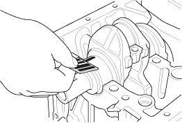

Main Bearing Clearance Inspection
- To check main bearing-to-journal oil clearance, remove the lower block and bearing halves (see page 7-13).
- Clean each main journal and bearing half with a clean shop towel.
- Place one strip of plastigage across each main journal.
- Reinstall the bearings and lower block, then torque the bolts to 29 Nm (3.0 kgf/m, 22 lbf/ft) + 56
°.NOTE: Do not rotate the crankshaft during inspection.
- Remove the lower block and bearings again, and measure the widest part of the plastigage.
Main Bearing-to-Journal Oil Clearance:
No. 1, 2, 4, 5 Journals:
Standard (New):
0.017 - 0.041 mm (0.0007 - 0.0016 in.)
Service Limit:
0.050 mm (0.0020 in.)
No. 3 Journal:
Standard (New):
0.025 - 0.049 mm (0.0010 - 0.0019 in.)
Service Limit:
0.055 mm (0.0022 in.)


- If the plastigage measures too wide or too narrow, remove the crankshaft, and remove the upper half of the bearing. Install a new, complete bearing with the same colour code(s), and recheck the clearance. Do not file, shim, or scrape the bearings or the caps to adjust clearance.
- If the plastigage shows the clearance is still incorrect, try the next larger or smaller bearing (the colour listed above or below that one), and check again. If the proper clearance cannot be obtained by using the appropriate larger or smaller bearings, replace the crankshaft and start over.